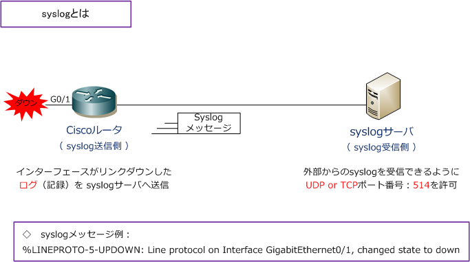

syslog
syslogとは
syslogはIPネットワーク上でログメッセージを転送する標準規格でありクライアント/サーバ型プロトコル。 syslog送信側（Ciscoルータなど）はsyslog受信側（Linuxサーバなど）にログ情報をテキストメッセージで 送信します。syslogメッセージはUDPまたはTCPポート番号の514を使用してsyslogサーバに送信されます。

CiscoルータやCatalystスイッチなどの「デバイス上の動作状況の記録」をログと言いますが、このログを 取得することで、そのデバイスで何が起きているのかを把握できます。Cisco機器などのネットワーク機器は syslogプロトコルにより、Ciscoデバイスで発生する各種イベントをログとしてsyslogサーバに送信できます。
syslog - FacilityとSeverity
syslogにおけるシステムログには「Facility」と「Severity」という考え方があります。
Facilityとは、正確に言えば「ログの種別」のことであり、分かりやすくいえばメッセージの「出力元」 のことです。ファシリティには以下の種類があり、ファシリティを使用することでメッセージの出力元に 応じてログの出力先を制御できます。Linuxでは「 * 」を使用することで全ファシリティを選択できます。
【 syslogのFacility 】
| Facility | 説明 |
|---|---|
| auth、authpriv | 認証サービス ( login、su など) |
| cron | cron |
| daemon | 各種デーモン |
| kern | カーネル |
| lpr | 印刷システム |
| メールシステム | |
| news | ニュースサービス |
| syslog | syslog機能 |
| user | ユーザープログラム |
| local0 ～ local7 | 独自の設定 |
Severityとは、メッセージの優先度を表します。Severityはemergが最も高く、debugが最も低い ことを意味します。指定したSeverityよりもレベルが高いものが全て記憶されるので、例えばcritを 指定した場合、crit、alert、emergレベルのログが記録されます。特定のSeverityを指定したい場合、 Severityの前に = をつけます。noneは例外指定したファシリティのログを除外する役割を持ちます。
【 syslogのSeverity 】
| Severity | 説明 |
|---|---|
| emerg | 非常に危険な状態 |
| alert | 危険な状態 |
| crit | 危険な状態 |
| err | 一般的なエラー |
| warning | システムからの警告 |
| notice | システムからの重要な通知 |
| info | システムからの情報 |
| debug | デバッグ情報 |
| none | ファシリティ無効（メッセージを送らない） |
上述の標準仕様に従いシスコデバイスではSYSLOGのプライオリティを以下のように定義しています。
| Level キーワード | レベル | 説明 | UNIX Syslog定義 |
|---|---|---|---|
| emergencies | 0 | システムが不安定 | LOG_EMERG |
| alerts | 1 | 即時処理が必要 | LOG_ALERT |
| critical | 2 | クリティカルな状態 | LOG_CRIT |
| errors | 3 | エラー状態 | LOG_ERR |
| warnings | 4 | 警告状態 | LOG_WARNING |
| notifications | 5 | 正常だが注意を要する状態 | LOG_NOTICE |
| informational | 6 | 情報メッセージ | LOG_INFO |
| debugging | 7 | デバッグメッセージ | LOG_DEBUG |